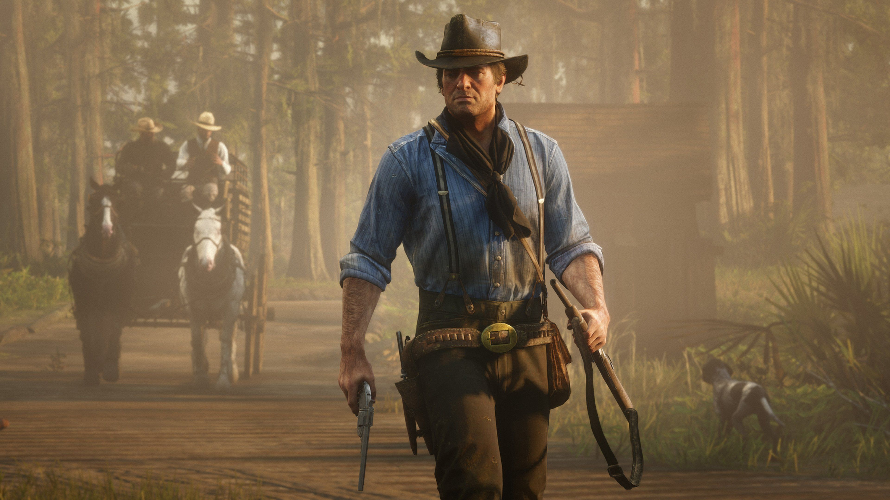
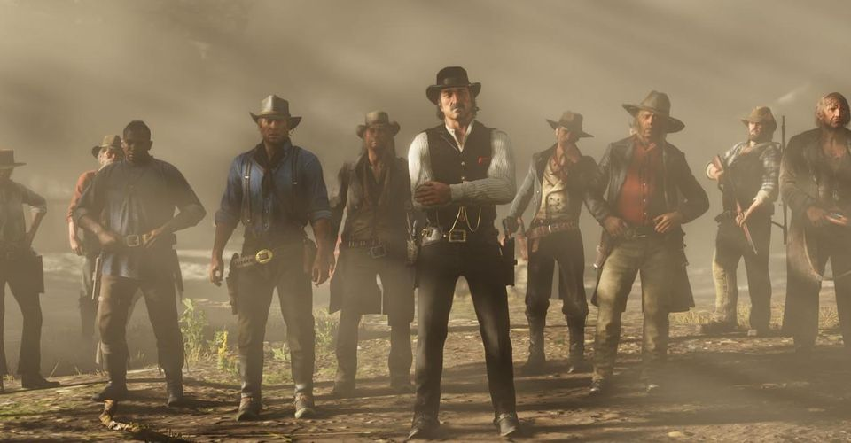
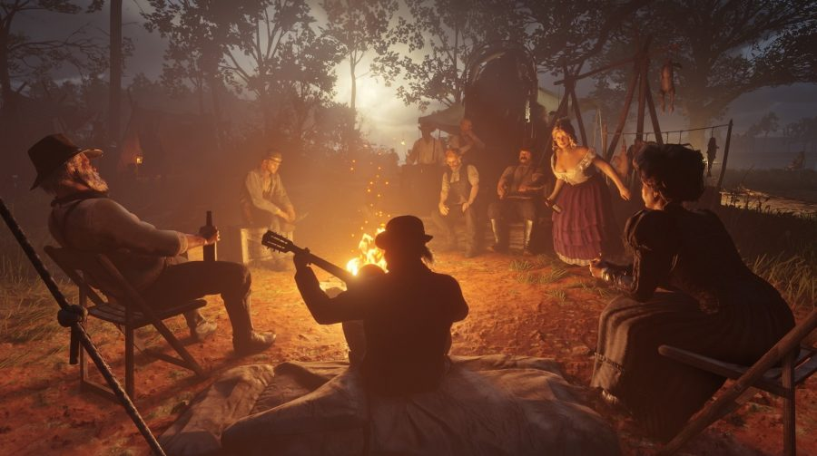
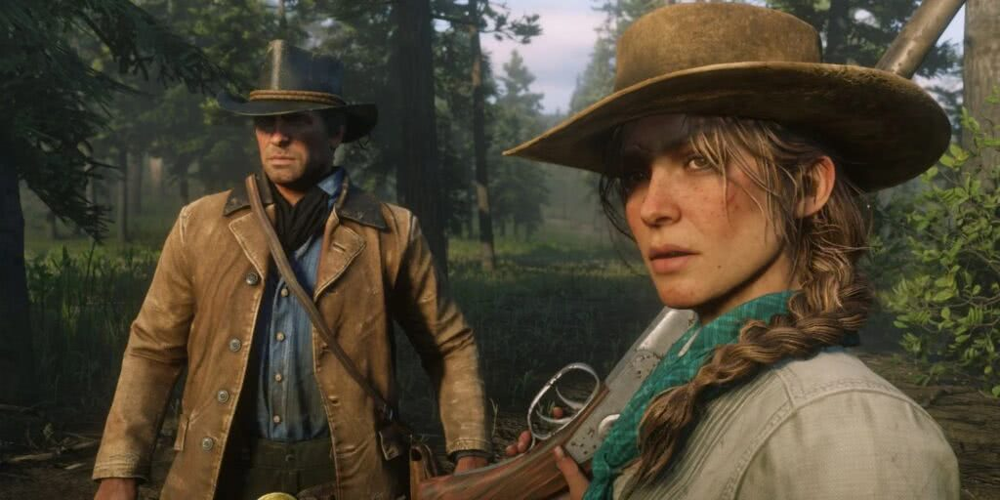

|  |
| A história se passa em 1899 em uma representação ficcional do oeste, meio-oeste e sul dos Estados Unidos e acompanha o fora da lei Arthur Morgan, que precisa lidar com o declínio do Velho Oeste e sobreviver à perseguição de forças governamentais, gangues rivais e outros adversários. Red Dead Redemption 2 conta a história do colapso de uma família na forma da gangue Van der Linde. Os roteiristas estavam interessados em explorar a história de por que a gangue se desfez, como foi algo frequentemente mencionado no primeiro jogo. Josh Bass, diretor de arte da Rockstar San Diego, sentiu que a presença de Dutch (o líder da gangue Van der Linde) "pairava sobre o primeiro jogo". Assim como seu antecessor, Red Dead Redemption 2 se passa durante a queda do Velho Oeste, em um mundo que acabou se tornando moderno demais para a gangue. Aaron Garbut, diretor de arte da Rockstar North, comentou que a Rockstar "pretendia capturar uma grande fatia da vida americana em 1899, uma nação em rápida industrialização que logo estaria de olho no cenário mundial". |
|  |
| A equipe estava focada em criar uma reflexão fiel daquele período, tanto nas pessoas quanto nos locais. Os cidadãos do jogo contrastam entre ricos e pobres, enquanto os locais contrastam entre a civilização e o deserto. No que diz respeito à escala da narrativa, Houser a descreveu como "mais parecida com Thackeray do que com Hemingway", com várias mudanças nos personagens, locais e ideologias. Houser teve como inspiração o cinema e a literatura, embora tenha evitado obras contemporâneas para evitar de ser acusado de roubo de ideias. Ele citou Uriah Heep, um personagem fictício do romance David Copperfield (1850), de Charles Dickens, e alguns dos trabalhos de Arthur Conan Doyle como influências significativas, assim como Henry James, John Keats, e Émile Zola. Houser pretendia fazer com que algumas partes da narrativa refletissem eventos contemporâneos, mas não de maneira direta, observando que é um "sentimento que achamos interessante no século 19 e que falou conosco, e esperamos que ele fale com as pessoas sobre os problemas de hoje".Ele não queria que o jogo fosse visto como uma obra histórica, mas sim como uma obra de ficção histórica, optando por aludir eventos históricos em vez de recontá-los devido ao seu desagrado. Houser queria que a retirada da gangue da sociedade fosse a antítese da introdução calma do jogo. |
|  |
| O primeiro capítulo foi visto como um método para refrescar a paisagem, colocando um grupo de caubóis contra uma nevasca. A equipe redesenhou o primeiro capítulo do jogo por sua extensa duração, pois Houser o considerou como o capítulo mais importante. O chefe de estúdio da Rockstar North, Rob Nelson, sentiu que o final do jogo era "o final certo" para ele, devido à natureza do título original. O roteiro final da história principal do jogo foi de cerca de 2.000 páginas, embora Houser tenha calculado que a pilha de páginas "tinha dois metros e meio de altura" se todas as missões secundárias e diálogos adicionais fossem incluídos. Cada um dos atores de pedestres tinha roteiros de cerca de 80 páginas. Cerca de cinco horas do jogo foram descartadas antes do lançamento, algumas das quais apresentavam um segundo interesse amoroso do protagonista, além de uma missão que aconteceria em um trem com caçadores de recompensas. Houser observou que a decisão da equipe de retirar essas missões se deve ao fato de nunca terem trabalhado tecnicamente nelas para serem suficientemente boas. Ao projetar o mundo do jogo, Garbut afirmou que a equipe não foi especificamente inspirada no cinema ou na arte, mas em locais reais, observando que "estavam construindo um lugar, não uma representação linear ou estática". O diretor de iluminação Owen Shepherd foi inspirado por pintores pastorais como William Turner e Rembrandt. As vistas do mundo aberto do jogo foram parcialmente inspiradas por pinturas de artistas como Albert Bierstadt, Frank Tenney Johnson e Charles Marion Russell. A modelagem de Saint Denis é baseada na cidade de Nova Orleans. A Rockstar projetou o mundo do jogo pensando em como ele poderia se casar com a narrativa. Nelson afirmou que a equipe estava "obcecada em fazer um mundo natural e orgânico em todos os aspectos". |
|  |
| Durante o final do século XIX tivemos vários acontecimentos no velho-oeste americano que são retratados no game. Guerras entre famílias, como o conflito entre, Grahams e Tewksburys (que no jogo ocorre entre Greys e Braithwaithes) assassinato de militares e civis, assaltos a trens, momentos históricos, como o direito ao voto para mulheres do Colorado (você realiza uma missão que faz referência a esse feito) e a descoberta do petróleo (em vários locais do mapa). A narrativa e os diálogos ironizam e problematizam as noções de “progresso” e “civilização”, fazendo várias críticas ao tratamento dado aos indígenas e criticando as fumaças pretas expelidas pelas chaminés das fábricas. Nas montanhas ou nas florestas, nos meios urbanos ou rurais, Arthur Morgan e o banditismo social desafiam a ordem econômica, social e política com seu bando de homens violentos e armados. Historicamente falando, mulheres eram raras nos bandos, mas, em RDR2 há uma variedade de personagens femininas muito importantes para o desenrolar da história, como Sadie Adler, que se cansa de ficar no acampamento e se impõe perante os homens para se tornar uma caçadora de recompensas e poder usar roupas, segundo a personagem, mais confortáveis (ela troca o vestido por roupas masculinas). Como um fenômeno característico, o banditismo dificilmente existe fora de ordens socioeconômicas e políticas que não possam ser desafiadas. É interessante notar as opções dada ao jogador, poder seguir um caminho “honrado” ou um criminoso, que trará pesadas consequências: ser procurado. Ser perseguido por agentes federais é uma maldição no jogo que nega acesso a recursos básicos e pode fazer de você o alvo de ataques mortais da lei. |